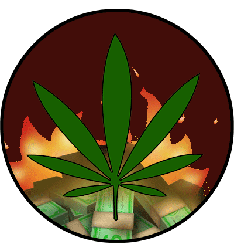
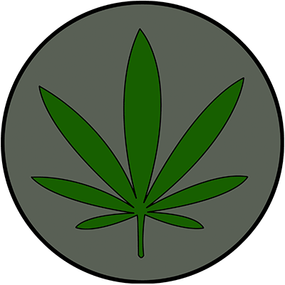
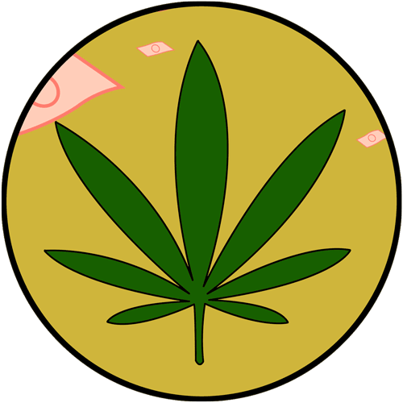

Link to Week4
|  |  |  | ||
|
State 1: Stock value is down Background: Gloomy red. this color was chosen to indicate that the stock is negative. Red usually represents stop or warning - this is intended to warn people who have invested in this stock to not cash out or else they would obviously lose money. I also chose a gloomy shade of this color to introduce a feeling of sadness. People would generally be sad if they lost money. Animation: Burning money. represents losing money. |
State 2: Stock value is neutral Background: Grey. this color was to represent the neutral state as grey is one of the most neutral colors our there. Animation: ZZZ (Sleep). This was chosen to represent a non-moving state. |
State 3: Stock value is up! Background: Gold. This color was used to represent the possible earnings for poeple who have invested and are thinking of cashing out. Animaztion: Raining money! This one is self explanatory |
Links to the original stickers used:
burning-money
Zzz
raining-money
Photoshop was used to edit all the elements together